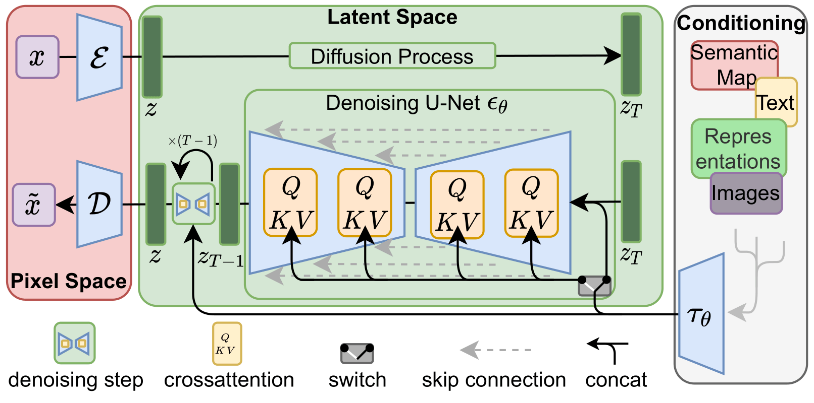
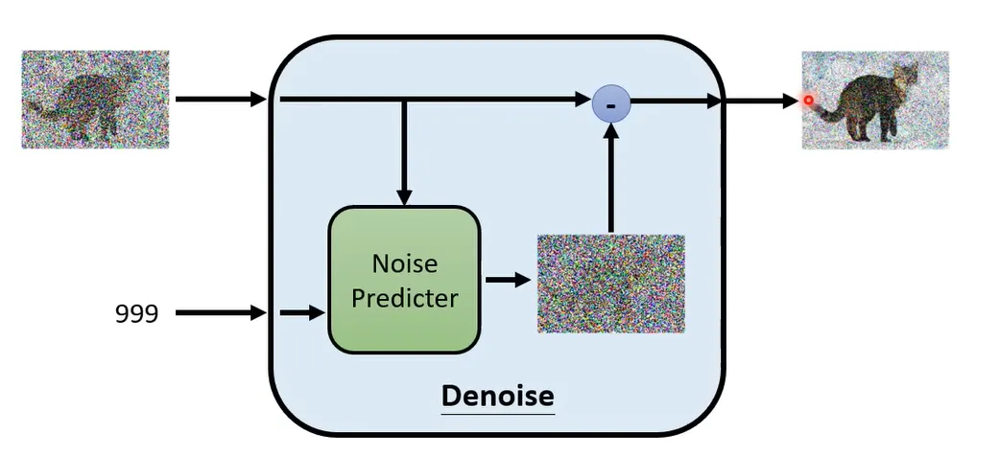
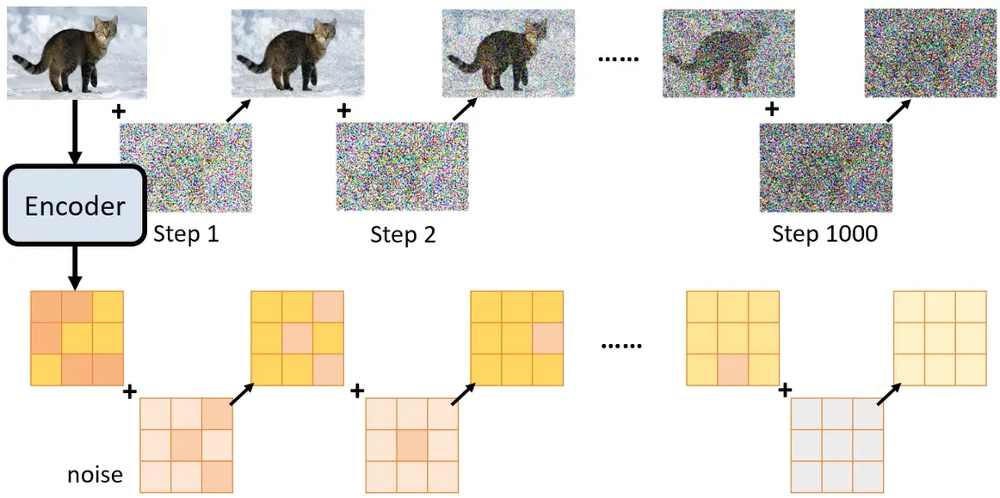
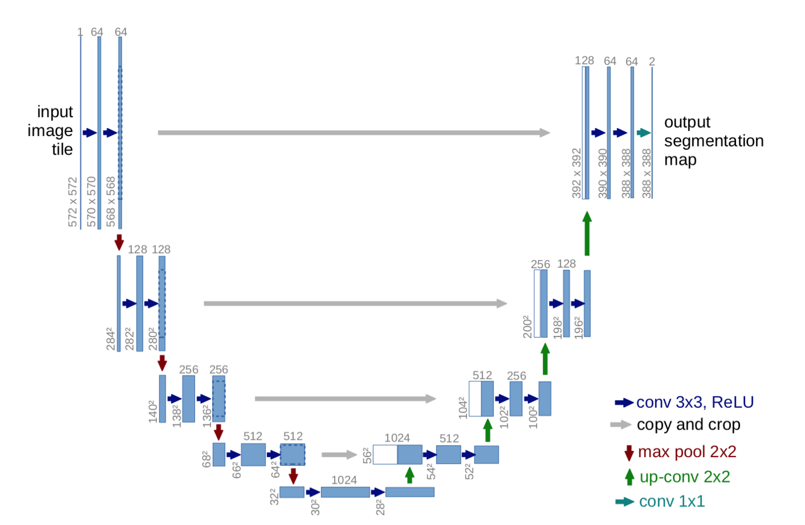

演算法介紹
簡介
LDM原理
LDM最主要用途在於處理影像，它是為了解決傳統擴散模型（Diffusion Models）在處理高解析度影像時，計算成本過高與生成速度過慢的缺點。
它主要的學習方法是逆向去噪過程（Reverse Denoising）。而核心原理為空間壓縮與轉換，結合了VAE的數據壓縮能力和DDPM的高質量生成能力，LDM先將圖片壓縮至維度較小但保留核心特徵的潛在空間進行去噪處理，在低維度中進行擴散，能大幅降低運算成本與記憶體消耗。
LDM繼承了DDPM訓練穩定的特性，避免了GAN常見的訓練失衡問題。模型從完全隨機的潛在雜訊開始，模仿DDPM的反向過程，按順序在多個離散時間步（Timesteps）中預測並剔除雜訊 。
運作流程
- 感知壓縮（Perceptual Compression），運用VAE將高維度資料壓縮成潛在向量（Latent Vector）
- 在潛在空間中進行加噪，也就是前向過程，使之成為潛在噪聲（Latent Noise）。
- 使用DDPM的反向過程在潛在空間進行去噪，顯現圖像特徵。
- 文字引導去噪方向，透過交叉注意力機制（Cross-Attention）讓模型理解文字指令與圖像內容的對應關係，以確保符合需求。
- 利用VAE解碼器將完成的潛在向量還原成高解析度影像。
詳細運作原理
壓縮機制
LDM的壓縮機制分為兩個，感知壓縮與語意壓縮，感知壓縮是負責將影像資料進行空間降維，消除掉不具語義意義的細節；而語意壓縮則是在潛在空間由擴散模型介入，學習資料的語意與概念組成。
1. 第一階段：感知壓縮（Perceptual Compression）
在此階段中，LDM會先訓練一個變分自編碼器負責壓縮資料與解壓縮（於擴散模型去噪完成後才接手），此變分自編碼器會將高解析度的影像進行空間降維，它選擇適度的降採樣因子（Downsampling Factor），將圖像資料壓縮成維度較小的（約4或8倍，相對某些模型極端且破壞畫質的空間降採樣較溫和）且運算效率高的「潛在表示」（Latent representation）。由於後續接手的LDM模型（U-Net）善於處理二維空間結構的數據，因此此潛在表示仍為保留二維特徵的特徵圖。
除此之外，為了避免圖像模糊，在壓縮時結合了兩項損失函數進行計算，感知損失（Perceptual Loss）與基於區塊的對抗性目標/對抗損失（Patch-based Adversarial Objective / GAN Loss），前者促使模型保留影像的視覺特徵，後者則強制模型學習局部真實感，確保還原出的影像能維持在真實的圖像流形（Image Manifold）上，從而有效避免模糊，讓影像保持銳利。
且為了防止壓縮出來的潛在空間變異數過大（數值不受控制），LDM在感知壓縮階段會加入正則化機制，如下：
• KL 正則化（KL-reg.）：類似於標準的變分自編碼器（VAE），對潛在表示施加輕微的KL懲罰，使其趨向標準常態分佈。
• VQ 正則化（VQ-reg.）：在解碼器中引入向量量化（Vector Quantization）層來規範潛在空間。
藉由上述的方式，LDM能消除肉眼無法察覺的無意義影像細節並讓運算複雜度降低，創造一個視覺感知上等價的潛在空間，並讓LDM不需像其他模型進行會嚴重破壞畫質的極端壓縮，從而保留極高的影像保真度。
2. 第二階段：語義壓縮（Semantic Compression）
此階段於擴散模型負責（通常以U-Net實現），用於學習資料的語義概念與組成。它會在建構好的低維度「潛在空間」內部進行訓練與生成，透過學習逆向的去噪過程，從潛在雜訊中復原具備語義的特徵。由於不需要在原始像素空間中評估每一顆像素，因此運算量與運算時間皆大幅降低。
去噪與還原
1. 生成雜訊矩陣
從潛在空間中隨機生成一個無序的高斯雜訊矩陣（例如維度為 $64 \times 64$ 的潛在向量 $Z_T$），此時的矩陣不包含任何有意義的圖像結構。
2. 去噪與重新加噪的疊代循環（Denoise and Renoise Loop）
去噪過程被設定為一系列離散的時間步（Timesteps）的循環（如從 $T=1000$ 倒數至 $1$）。在此循環中，模型會執行以下動作：
U-Net預測雜訊（Noise Prediction）
U-Net用來預測這個矩陣裡面包含了多少「隨機雜訊（$\epsilon$）」。在每一個時間步 $t$，擔任去噪核心的U-Net模型會接收當下的潛在矩陣 $Z_t$ 以及當前的時間步訊號作為輸入。
交叉注意力引導（Cross-Attention Guidance）
在U-Net預測雜訊的同時，會透過內部的交叉注意力機制（Cross-Attention），讀取由文字編碼器或其他條件所傳來的特徵矩陣。這些條件會指示U-Net在預測雜訊時，應該保留哪些符合文字描述的結構特徵。
去噪與重新加噪（Denoise and Renoise）
當U-Net預測出雜訊後，系統會運用公式，從當前的潛在矩陣中扣除這部分預測出來的雜訊（稱為去噪）。然而，為了維持生成的穩定性與多樣性，會再加入一點隨機雜訊（Renoise），加入的雜訊量會比剛剛扣除的還要少。每一次完成此循環，留下來的潛在矩陣就會多出一點具備視覺邏輯的結構資訊。
3. 逐步顯現結構特徵（Progressive Decoding）
隨著時間步不斷遞減，潛在矩陣中的雜訊比例會越來越低。這是一種漸進的解碼過程，模型會先建立大範圍的全局特徵（如整體構圖、物體輪廓），最後才在接近循環尾聲時，填補細節（如紋理）。
4. 最終還原（Image Synthesis）
當完成所有的去噪時間步（$t=0$）時，所有隨機雜訊都被剔除，此時潛在空間中就生成了一個乾淨且包含語義的潛在特徵向量。最後，這個潛在特徵向量會被送入VAE的解碼器（Decoder）進行解壓縮，還原成高解析度像素圖片。
LDM模型架構與運作機制
在潛在擴散模型使用了U-Net架構，並採用卷積殘差區塊 (Convolutional Residual Block)、空間條件拼接（Spatial Conditioning）、多元退化訓練（Diverse Degradation）以及卷積採樣（Convolutional Sampling）等機制。
U-Net架構
介紹LDM的機制前，先簡單介紹一下在該擴散模型中的架構「U-Net」。
U-Net最初是用來做醫學影像切割的，透過全卷積網路(FCN)的設計，針對圖片的每一個像素進行分類。整體架構呈現「U」字型，左半部（收縮路徑）負責壓縮圖片尺寸並萃取特徵，右半部（擴張路徑）則負責放大影像解析度，藉此精準定位出物件的邊界輪廓。
U型架構左右分成多個不同解析度的階層，原始的U-Net架構左側由上而下採樣，於最底部得到解析度最低且包含深層語意的特徵圖。接著右側由下而上進行反卷積將圖片放大，為了精準還原定位，每次都會去尋找左側同樣水平高度、未被進一步壓縮的特徵圖來補足流失的空間細節，並將左側稍大的特徵圖進行修剪（因為左側卷積不會填補邊緣），再拼接兩者，然後繼續運算。
在完成所有的拼接與卷積後，網路的最後一層會使用 $1 \times 1$ 的卷積核，將特徵圖轉化為特定數量的類別結果，如區分目標與背景，以此完成每個像素的精確分類。
而在LDM中重新將U-Net拿來利用，用來接收被壓縮且充滿隨機雜訊的潛在影像，並預測影像中包含了多少雜訊，其中不只保留了空間拼接的特性，還加入了條件生成機制，接受文字引導，在多個步驟中循序地剔除這些雜訊。
卷積殘差區塊 (Convolutional Residual Blocks)
卷積殘差區塊是構成現代 U-Net 架構骨幹（通常基於 Wide ResNet）的核心神經網路元件。它取代了早期傳統 U-Net 中單純的卷積層。
• 殘差單元 (Residual Unit)：殘差區塊的設計中包含「跳躍連接 (Skip Connection)」，讓特徵資訊在神經網路中能更順暢地傳播並使深層模型的訓練變得更簡單、穩定，在不降低效能的情況下大幅提升特徵萃取的效果。
• 具體運作：在LDM的U-Net內部，模型會在每一個特徵圖的解析度層級上串聯多個卷積殘差區塊。這些區塊會搭配群組正規化(Group Normalization)來處理特徵，而在特定的解析度（例如 $16 \times 16$）下，還會插入自注意力區塊(Self-attention blocks)來精確捕捉圖像的全局空間結構與關聯。
空間條件的直接拼接(Spatial Conditioning via Concatenation)
對於需要高度對齊空間特徵的任務（如修復與放大），LDM不需要依賴交叉注意力機制，而是將「降採樣的條件資訊（如低解析度圖片或帶有遮罩的圖片）」直接與U-Net的潛在影像輸入進行通道拼接（Concatenation），使模型可以作為一個高效且通用的轉換模型。
多元退化模型 (LDM-BSR)
在處理影像放大（Super-Resolution）時，若僅使用雙三次插值（Bicubic interpolation）進行降採樣訓練，模型會難以泛化至現實世界中未經此處理的圖片。為了解決這個問題並實現高解析度放大，研究團隊提出了 LDM-BSR 模型：
• 多元退化流程：訓練過程中加入了多種隨機影像退化處理，包含JPEG壓縮雜訊、相機感測器雜訊、不同插值方法、高斯模糊與高斯雜訊等。
• 百萬像素級放大：透過學習這些複雜的雜訊，將圖片成功放大至百萬像素（Megapixel）等級，且邊緣與細節極為清晰。
拔除注意力與高解析度微調(Inpainting)
為了實現高解析度的修復，LDM採用了以下策略：
• 無注意力機制架構（w/o attn）：為了在處理高解析度時節省 GPU 記憶體，研究人員訓練了一個較大但移除了第一階段注意力機制的LDM模型。
• 特徵統計微調（Fine-tuning）：將原本在 $256 \times 256$ 解析度下訓練的模型，直接在 $512 \times 512$ 的解析度下進行半個Epoch的微調（Fine-tuning）。這個步驟讓模型能適應新的特徵統計數據，進而創下高解析度影像修復的SOTA（最先進）表現。
卷積採樣與潛在空間縮放
其卷積採樣（Convolutional Sampling）能力使得LDM能生成比訓練時更大尺寸影像：
• 無縫放大生成範圍：由於LDM的U-Net主要由卷積層構成，可以被當作全卷積網路使用。即使模型是在 $256 \times 256$ 的尺寸下訓練，也能夠在推論時透過卷積採樣，直接生成 $512 \times 512$ 甚至 $1024 \times 1024$ 解析度的影像。
• 控制訊噪比（SNR）與縮放潛在空間：當生成超出訓練尺寸的影像時，潛在空間的「訊噪比（Signal-to-Noise Ratio）」會對結果產生重大影響。為了解決這個問題，LDM利用特徵的標準差對潛在空間進行縮放（Rescaling），確保生成大尺寸影像時，仍能維持一致且合理的全局結構。
交叉注意力機制（Cross-Attention Mechanism）
透過將模型架構擴展，使U-Net能接收外部的條件輸入（如文字指令）。
透過 $Q$（Query）、$K$（Key）、$V$（Value）運算架構對齊與融合文字與圖像特徵，其完整運作步驟如下：
1. 在開始去噪之前，系統會先利用特定領域的編碼器（Domain Specific Encoder，如 CLIP、BERT tokenizer 或 Transformer），將輸入的文字指令轉換為神經網路能理解的中間特徵矩陣，其中包含了文字的語義資訊，用於後續U-Net的引導。
2. 為了接收這些文字引導，在U-Net的架構中加入了多層的「交叉注意力層」，如下：
$Q$（Query，查詢）：來自U-Net當前正在處理的圖像潛在特徵。這代表U-Net當前正在處理圖片的哪個部分，並主動詢問需要做甚麼填補。
$K$（Key鍵）與 $V$（Value值）：皆來自於第一步產生的文字特徵矩陣，代表使用者的文字指令，用來回答 $Q$ 提出的詢問。
3. 在準備好 $Q$、$K$、$V$ 之後，交叉注意力層會執行以下數學運算：
$$\text{softmax}\left(\frac{Q K^T}{\sqrt{d}}\right) \cdot V$$
系統會先計算圖像特徵（$Q$）與文字指令（$K$）之間的相似度，找出現階段正在處理的圖像區域應該注意哪幾個字詞。接著再根據這個關注權重，將對應的文字特徵資訊（$V$）乘進去，正式導入圖像特徵圖之中。
DDPM：
Denoising Diffusion Probabilistic Models擴散模型，現代生成式AI核心基礎，運作模仿物體的空間擴散，分為前向過程Forward Process及反向過程Reverse Process。
VAE：
Variational Autoencoder變分自編碼器，是在自編碼器（AE）的基礎上引入機率分布概念的改良版，傳統AE會將數據壓縮成一點（隱藏向量），導致隱藏空間不連續，難以生成新內容。VAE的編碼器產出的不再是固定數值，而是數據的機率分佈參數（通常是平均值與標準差），這樣確保隱藏空間（Latent Space）連續且有規律。最後在分布中進行採樣並交由解碼器還原，生成內容。原理穩健，具有生成速度快的優點，但基於最大似然估計，有著圖片較模糊的缺點。
時間步：
代表擴散模型在「加噪」或「去噪」過程中的具體階段。擴散模型被設定為一系列離散的時間步，模型會從完全隨機的雜訊開始，每一個時間步都會預測並剔除一點點雜訊，最終在第0步還原出清晰的圖像。 且由於在去噪步驟中共用同一套模型參數，為了讓模型知道當下正在處理哪一個去噪階段，系統會利用類似Transformer的「正弦位置嵌入」技術，將當前的時間步轉換成一個訊號。這個時間步訊號會被直接加入到網路的每一個殘差區塊中，以此來引導模型在不同的時間步執行去噪任務。
學習歷程
透過AI的條列式整理以及表格比較，能夠更清楚地了解重點，再透過這些重點整理，逐步去詢問更詳細的原理或是在閱讀文獻時特別關注這些重點的詳細資料，藉由這樣的輔助可以在整理或學習時有更清晰的思路。
Phase 01 / 初步探索
Q：我對生成式AI演算法比較有興趣，請問上面列出的五個演算法（AE、VAE、GAN、DDPM、LDM），哪個在生成圖片上最泛用?哪個生成出的圖片最接近真實(如真人繪製、拍攝照片)?又哪個最不輕易被辨識出來呢?▼
A：
1. 哪個生成圖片最泛用？勝出者：Latent Diffusion Model (LDM)
2. 哪個生成的圖片最接近真實？勝出者：DDPM / LDM (擴散模型系列)
3. 哪個最不輕易被辨識出來（最難辨真偽）？短期爆發力：GAN；整體穩定度：LDM
這取決於辨識的對象是「人類肉眼」還是「AI 檢測器」。
Q：那請你幫我說明一下LDM的原理、用途、運作流程、應用▼
A：
1. LDM 的原理
LDM 的核心思維是「空間壓縮與轉換」。
• 結合兩大技術：它結合了VAE的數據壓縮能力與DDPM的高質量生成能力。
• 潛在空間運算：傳統DDPM在原始的「像素空間（Pixel Space）」運作，計算量龐大。LDM則是先利用VAE將圖片壓縮到一個維度較小、但保留核心特徵的「潛在空間（Latent Space）」進行去噪處理。
• 穩定與效率：在低維度的潛在空間中進行擴散過程，能大幅降低運算成本與記憶體消耗，讓普通等級的GPU也能跑出高品質圖像。
2. 運作流程
• 感知壓縮 (Perceptual Compression)： 使用 VAE 的編碼器將高解析度圖片壓縮成潛在向量（Latent Vector） 。
• 擴散過程 (Diffusion Process)：在潛在空間中進行，包含逐步加入雜訊的「前向過程」與學習去除雜訊的「反向過程」 。
* 此階段通常會加入「文字引導（Conditioning）」，透過交叉注意力機制（Cross-Attention）讓模型理解文字指令與圖像內容的對應關係 。
• 影像還原 (Image Synthesis)： 去噪完成後，再利用 VAE 的解碼器將潛在向量還原回高解析度的原始像素圖片 。
3. LDM 的用途與應用
LDM 因其效率與擬真度，成為目前最受歡迎的生成技術。
主要用途
• 提升生成效率： 克服了 DDPM 生成速度極慢的缺點 。
• 精確控制生成： 能夠輕鬆結合文字提示詞（Prompts）來導引圖片生成的內容與風格 。
實際應用範例
• Stable Diffusion： 全球最知名且開源的 LDM 應用模型 。
• 商業繪圖與藝術創作： 廣泛應用於插畫、角色設計及場景建模 。
• 室內設計與廣告開發： 透過文字描述快速產出多種風格的空間設計圖或行銷視覺 。
• 多模態模型基礎： 作為高階視覺研究與跨領域 AI 應用的核心骨幹 。
Phase 02 / 針對性問答
Q：可以介紹DDPM 和 VAE的原理嗎▼
A：
1. VAE (Variational Autoencoder, 變分自編碼器)
VAE 是在自編碼器（AE）的基礎上引入了機率分佈概念的改良版 。
核心原理
• 從「點」到「分佈」： 傳統 AE 的編碼器會將數據壓縮成一個固定的「點」（隱藏向量），這導致其隱藏空間不連續，難以生成新內容 。VAE 的編碼器則是產出數據的機率分佈參數（通常是平均值 $\mu$ 與標準差 $\sigma$） 。
• 連續的隱藏空間： 透過產出分佈，VAE 確保了隱藏空間（Latent Space）變得連續且有規律 。
• 採樣生成： 我們可以從這個分佈中進行採樣（Sample），並交由解碼器還原，從而生成全新且具有邏輯性的內容 。
2. DDPM (Denoising Diffusion Probabilistic Models, 擴散模型)
DDPM 是現代生成式 AI（如 DALL-E 2）的核心基礎，其靈感來自於物理學中的擴散現象 。
核心原理
DDPM 的運作模仿了物體在空間中擴散的過程，分為兩個方向 ：
• 前向過程 (Forward Process)： * 這是一個「加噪」的過程。
o 模型逐步在原始圖片中加入微小的高斯雜訊，直到圖片最終變成完全無序的隨機雜訊 。
o 這就像精油擴香機將濃縮的液體擴散到空氣中，變成隨機分佈的粒子 。
• 反向過程 (Reverse Process)：
o 這是 DDPM 的訓練重點，即「去噪」。
o 模型學習如何從完全的雜訊中，「一步步」地剔除雜訊，最終還原成清晰且有意義的圖片 。
o 關鍵邏輯在於：如果你能理解數據是如何擴散（變亂）的，你就應該能模擬如何反轉該過程 。
Q：交叉注意力機制（Cross-Attention）是甚麼，以及介紹一下如何去噪▼
A：
1. 交叉注意力機制 (Cross-Attention)
在 Stable Diffusion 或 LDM 的架構中，交叉注意力機制扮演著「導航燈塔」的角色 。
• 核心功能：它負責讓模型理解文字指令（Prompt）與影像像素之間的對應關係 。
• 運作邏輯：
o 模型會同時處理兩個來源的資訊：一個是來自潛在空間的影像特徵，另一個是來自文字嵌入器（Text Embedder）的數字向量 。
o 透過交叉注意力的運算，模型會去「注意」文字指令中特定的關鍵字，並與影像中對應的結構（例如：文字提到「貓」，模型就會加強去噪過程中屬於貓的輪廓部分）進行比對與對齊 。
• 重要性：沒有這個機制，模型產出的影像將會是隨機的，無法根據使用者的描述（如「夕陽下的沙灘」）生成精確內容 。
2. 如何去噪 (Denoising Process)
去噪是擴散模型（DDPM/LDM）生成影像的核心步驟，其運作流程可以比喻為一位從石材中雕刻出作品的「雕刻家」 。
A. 初始狀態：潛在雜訊 (Latent Noise)
• 生成並非從零開始，而是先在潛在空間中產生一塊完全隨機的「雜訊石材」 。
B. 循環疊代：去噪與再加噪 (Denoise & Renoise)
• 預測雜訊：去噪模型（通常由 U-Net 組成）會觀察當前的雜訊狀態，並在文字引導下，預測出下一步「不應該存在」的雜訊成分 。
• 循序漸進：模型不會一次就變出清晰圖片。研究發現，按順序（分為多個離散時間步，Timesteps）慢慢減少雜訊會有效得多 。
• 每次循環：模型先移除一部分預測的雜訊，得到稍微清晰一點的草稿，然後以此為基礎進入下一個步驟 。
C. 顯現圖像特徵
• 隨著步驟（Steps）增加，隨機的雜訊逐漸消退，原本隱藏在雜訊中的細節（如光影、紋理）會慢慢浮現並變得穩定 。
Q：我想了解如何透過調整 去噪步數（Steps） 來影響最終圖片的品質▼
A：
1. 雕刻細節的精細度 (如同雕刻次數)
在 LDM 的運作邏輯中，模型被比喻為「雕刻家」 。
• 低步數（如 10 步以下）：模型只進行了少數幾次粗略的去噪。這像雕刻家只用大鑿子揮了幾下，雖然能看出大致的輪廓（如人像或風景），但細節會非常模糊，且可能充滿殘留的雜訊 。
• 中等步數（如 20 - 50 步）：這是目前最泛用的區間。模型有足夠的疊代次數來精雕細琢，能讓影像中的紋理（如皮膚、布料）與光影逐漸顯現並趨於穩定 。
• 高步數（如 100 步以上）：理論上細節會更極致，但收益會遞減。過高的步數可能導致模型在已經很清晰的圖像上過度處理，有時反而會產生不自然的紋理。
2. 生成時間的成本與效率
LDM 相較於傳統 DDPM 的優點之一在於效率 ，但步數依然直接決定了運算資源的消耗。
• 正比關係：去噪步數與生成時間成正比 。每增加一個步驟，模型（通常是 U-Net）就必須重新執行一次預測與剔除雜訊的計算 。
• 效率平衡：研究發現，利用 LDM 按順序（離散時間步）添加與減少雜訊比一次性生成有效得多 。調整步數的目的在於找到一個「高品質」且「生成速度可接受」的平衡點。
3. 與文字引導 (Guidance) 的互動
去噪的過程中，文字引導 (Prompt) 會持續發揮作用 。
• 逐步對齊：隨著去噪步數增加，模型會透過「交叉注意力機制」更多次地比對文字向量與潛在影像特徵 。更多的步數通常能讓模型更精確地遵循複雜的指令（如：特定的背景細節或服裝描述） 。
• 收斂性：如果步數太少，模型可能還沒來得及將雜訊轉化為文字所要求的特定形狀（如「一隻在沙灘上的貓」），生成過程就結束了，導致內容不完整 。
Q：我對於另一個能控制圖片擬真度的參數 CFG Scale (提示詞遵循強度) 有興趣了解▼
A：
1. 核心原理：自由意志與指令的平衡
在 LDM 的運作中，CFG Scale 就像是一個控制模型「服從性」的調節鈕 ：
• 引導機制：模型會同時計算兩組路徑：一組是完全不參考文字的「隨機生成」，另一組是參考文字指令的「引導生成」 。
• 權重放大：CFG Scale 的數值決定了模型要將「文字引導」的路徑放大多少倍。數值越高，模型就越努力讓影像中的特徵與您的提示詞（Prompt）吻合 。
2. CFG Scale 對圖片擬真度的具體影響
調整此參數會直接改變影像的視覺風格與邏輯一致性：
• 低數值 (1 - 5)：
o 效果：模型擁有較多的「創作自由」。
o 品質：影像通常看起來較為柔和、自然，但可能不完全符合您的文字描述 。如果數值太低，生成的內容會顯得隨機且構圖鬆散。
• 中等數值 (7 - 11)：
o 效果：這是最推薦的平衡點。
o 品質：模型能準確遵循提示詞，同時保留擬真的紋理與光影，影像看起來最接近真實照片或精緻的藝術畫作 。
• 高數值 (15 以上)：
o 效果：模型過度追求遵循提示詞中的每一個字。
o 品質破綻：雖然顏色會變得極其鮮豔、對比度極高，但往往會導致「過曝（Burnt）」現象。圖片邊緣可能出現奇怪的偽影，且細節會變得生硬、不自然，反而降低了擬真度 。
3. CFG Scale 與去噪步數的協作
這兩個參數通常需要互相配合才能達到最佳擬真度 ：
• 高 CFG + 高步數：如果您設定了極高的 CFG Scale，通常需要更多的「去噪步數」來修正因高強度引導產出的視覺誤差，讓「雕刻家」有更多時間平滑過度處理的邊緣 。
• 像雕刻家的引導：您可以想像 CFG Scale 是雕刻時的「設計圖精確度」 。數值太低，雕刻家隨興發揮；數值太高，雕刻家因為壓力太大，每一刀都刻得太深，導致成品過於生硬 。
Q：回到ldm，我想知道在生成文字或其他內容時的原理、用途、運作流程、應用也是一樣的嗎▼
A：
1. 核心原理的一致性：空間壓縮與逆向去噪
無論生成什麼，LDM 的基本公式是不變的 ：
• 潛在空間運作：所有複雜的數據都會先被壓縮進一個「地圖化」的潛在空間（Latent Space），以減輕運算負擔 。
• 擴散與還原：生成過程始於隨機的「潛在雜訊」（Latent Noise），並透過模擬物理逆向過程，一步步剔除雜訊來顯現特徵 。
• 雕刻家比喻：模型始終扮演「雕刻家」的角色，從雜訊石材中雕刻出內容，而非在畫布上從零開始 。
2. 運作流程的微調：不同內容的「導航圖」
當 LDM 應用於生成文字或其他內容（如影片、音訊）時，運作流程的「步驟 4：引導機制」會發生變化：
| 內容類型 | 潛在空間（石材類型） | 引導機制（設計圖） |
|---|---|---|
| 影像生成 | 壓縮的像素特徵 | 文字指令 (Prompt)：透過交叉注意力機制導引 。 |
| 文字生成 | 語義向量空間 | 上下文引導：預測下一個最可能的字詞標記 (Tokens)。 |
| 影片生成 | 帶有時間維度的潛在特徵 | 時間一致性引導：確保每一幀去噪後的畫面能連貫播放。 |
| 音訊生成 | 頻譜特徵（Spectrogram） | 文字描述或節奏引導：如「輕快的鋼琴曲」。 |
3. 用途與應用的擴張
雖然 LDM 目前在影像生成（如 Stable Diffusion）最為出名，但其應用已擴展到其他領域 ：
• 影片製作：利用擴散模型生成連貫的短片，解決傳統方法畫面閃爍的問題。
• 3D 建模：在潛在空間中「雕刻」出三維物體的形狀與紋理。
• 生醫研究：LDM 被用於生成新的蛋白質結構或藥物分子，這在原理上也是將分子結構視為一種「數據擴散」來處理。
4. 為什麼「文字生成」通常不直接用 LDM？
雖然 LDM 理論上可以生成文字，但目前的 大型語言模型 (LLM)（如 GPT 系列）多採用「自回歸 (Autoregressive)」架構而非「擴散」架構。
• 原因：文字是離散的符號，而擴散模型更擅長處理像素、音頻這類連續性的數據 。擴散模型在處理「從無序到有序」的視覺構圖上極強，但在處理精確的邏輯語法時，效率不如專門的語言模型。
Q：U-Net是甚麼▼
A：
1. U-Net 是什麼？
U-Net 是一種深度學習架構，在 LDM（如 Stable Diffusion）中擔任去噪模型（Denoising Model）的角色 。
• 外觀特徵：它的架構圖形狀像英文字母 「U」，因此得名。
• 主要任務：在潛在空間中執行「循環疊代」的去噪工作 。它會觀察當前的雜訊狀態，並預測出其中「不應該存在」的雜訊成分，進而將其剔除 。
• 角色比喻：它是雕刻家手中的「刻刀」。它負責對充滿雜訊的原始石材（Latent Noise）進行精雕細琢，讓圖像特徵逐漸顯現 。
2. U-Net 在 LDM 中如何運作？
在影像生成的過程中，U-Net 並非單獨作業，而是與其他組件協同工作：
• 輸入來源：它接收來自潛在空間的「隱藏雜訊」作為輸入 。
• 文字導航：透過交叉注意力機制（Cross-Attention），U-Net會參考右側傳來的文字指令（Prompt）向量 。這就像是在雕刻時對照著設計圖，確保每一刀刻下去都符合使用者的描述（例如：文字要求「貓」，U-Net 就會傾向於留下貓的輪廓） 。
• 循環去噪：模型不會一次完成去噪，而是在多個離散時間步（Timesteps）中重複運行 。每次循環，U-Net 都會移除一部分預測的雜訊，得到稍微清晰一點的草稿，再進入下一次循環 。
3. U-Net 的獨特設計
U-Net 之所以強大，是因為它具備以下特性：
• 特徵保存：它在壓縮數據（降維）的同時，能透過對稱的架構將特徵重新擴展（升維），這讓它在預測雜訊時能兼顧全局結構與微小細節 。
• 與 VAE 的合作：U-Net 只在較小的「潛在空間」裡工作（例如將 $512 \times 512$ 的影像簡化為 $64 \times 64$ 的空間運算），這使得它的去噪效率極高，一般電腦也能運行 。
查證與修正
關於LDM的原理與運作流程，gemini基本回答正確，但並不詳細與完整，因此上網搜尋相關論文以及文章，先大致讀過網路上他人整理的中文筆記，隨後上傳英文論文至notebooklm統整，並藉由一步步詢問整理與翻譯，補足LDM的完整原理。 同時也補足了更詳細的U-Net架構，並比較原始的U-Net與在LDM中的U-Net的差異，以及解釋了U-Net在LDM中是如何運作並和其他機制協同作業。
除此之外，LDM的壓縮步驟和交叉注意力機制有更詳盡的解釋，從原本單純的壓縮分成感知壓縮與語意壓縮。感知壓縮由VAE負責，VAE負責把這些不具語義意義的細節消除，將影像進行空間降維；語意壓縮則由擴散模型進行，在VAE壓縮完影像後，針對語意及概念進行學習。 由於論文為全英文內容，故利用notebooklm整理與尋找原文提及相關知識的段落，並藉由翻譯該段落來確認ai的回覆是否正確。
原始認知
U-Net 的獨特設計
特徵保存：它在壓縮數據（降維）的同時，能透過對稱的架構將特徵重新擴展（升維），這讓它在預測雜訊時能兼顧全局結構與微小細節 。
交叉注意力機制 (Cross-Attention)
核心功能：它負責讓模型理解文字指令（Prompt）與影像像素之間的對應關係 。
運作邏輯：
模型會同時處理兩個來源的資訊：一個是來自潛在空間的影像特徵，另一個是來自文字嵌入器（Text Embedder）的數字向量 。
透過交叉注意力的運算，模型會去「注意」文字指令中特定的關鍵字，並與影像中對應的結構（例如：文字提到「貓」，模型就會加強去噪過程中屬於貓的輪廓部分）進行比對與對齊 。
LDM 的原理
結合兩大技術： 它結合了 VAE 的數據壓縮能力與 DDPM 的高質量生成能力 。
潛在空間運算： 傳統 DDPM 在原始的「像素空間（Pixel Space）」運作，計算量龐大。LDM 則是先利用 VAE 將圖片壓縮到一個維度較小、但保留核心特徵的「潛在空間（Latent Space）」進行去噪處理 。
穩定與效率： 在低維度的潛在空間中進行擴散過程，能大幅降低運算成本與記憶體消耗，讓普通等級的 GPU 也能跑出高品質圖像 。
2. 運作流程
1. 感知壓縮 (Perceptual Compression)： 使用 VAE 的編碼器將高解析度圖片壓縮成潛在向量（Latent Vector） 。
2. 擴散過程 (Diffusion Process)： 在潛在空間中進行，包含逐步加入雜訊的「前向過程」與學習去除雜訊的「反向過程」 。
此階段通常會加入「文字引導（Conditioning）」，透過交叉注意力機制（Cross-Attention）讓模型理解文字指令與圖像內容的對應關係 。
4. 影像還原 (Image Synthesis)： 去噪完成後，再利用 VAE 的解碼器將潛在向量還原回高解析度的原始像素圖片 。
修正後知識
U-Net架構
將此對稱架構的內容補足，以利後續原理的介紹，介紹原本的U-Net運作時，左側向下採樣負責壓縮，右側透過反卷積進行放大，並尋找左側相同階層的、未被壓縮的特徵圖進行拼接，最後才將特徵圖轉化為特定數量的類別結果。
1.
左側由上而下採樣，於最底部得到解析度最低且包含深層語意的特徵圖。接著右側由下而上進行反卷積將圖片放大，為了精準還原定位，每次都會去尋找左側同樣水平高度、未被進一步壓縮的特徵圖來補足流失的空間細節，並將左側稍大的特徵圖進行修剪（因為左側卷積不會填補邊緣），再拼接兩者，然後繼續運算。
在完成所有的拼接與卷積後，網路的最後一層會使用 $1 \times 1$ 的卷積核，將特徵圖轉化為特定數量的類別結果，如區分目標與背景，以此完成每個像素的精確分類。
交叉注意力機制
補充了詳細運作過程，介紹QKV運算架構與公式，了解注意力交叉層中做了那些運算，此架構可以找出現階段應注意哪些字詞，導入圖像特徵圖之中。
1.Q（Query，查詢）：來自U-Net當前正在處理的圖像潛在特徵。這代表U-Net當前正在處理圖片的哪個部分，並主動詢問需要做甚麼填補。
2.K（Key鍵）與 $V$（Value值）：皆來自於第一步產生的文字特徵矩陣，代表使用者的文字指令，用來回答 $Q$ 提出的詢問。
$$\text{softmax}\left(\frac{Q K^T}{\sqrt{d}}\right) \cdot V$$
LDM原理
補充了關於語意壓縮與感知壓縮的原理，並添加說明感知損失、基於區塊的對抗性目標/對抗損失及正則化機制的作用。
1.
感知壓縮是負責將影像資料進行空間降維，消除掉不具語義意義的細節；而語意壓縮則是在潛在空間由擴散模型介入，學習資料的語意與概念組成。
變分自編碼器會將高解析度的影像進行空間降維，它選擇適度的降採樣因子，將圖像資料壓縮成維度較小的且運算效率高的「潛在表示」
2.
感知損失與基於區塊的對抗性目標/對抗損失，前者促使模型保留影像的視覺特徵，後者則強制模型學習局部真實感，確保還原出的影像能維持在真實的圖像流形上，從而有效避免模糊，讓影像保持銳利。
3.
KL 正則化（KL-reg.）：類似於標準的變分自編碼器（VAE），對潛在表示施加輕微的KL懲罰，使其趨向標準常態分佈。
VQ 正則化（VQ-reg.）：在解碼器中引入向量量化層來規範潛在空間。
視覺化說明
LDM運作架構圖

反向去噪過程示意圖

前向加噪過程示意圖

U-Net架構示意

應用案例
文字生成圖片 (Text-to-Image Synthesis)
LDM最廣為人知的應用，透過交叉注意力機制接收文字指令（Prompts），並精準生成符合文字描述的高解析度圖像。
影像修復與物件移除 (Image Inpainting)
用於填補圖像中被遮罩或損壞的區域，或者替換、移除圖像中不需要的內容。與傳統方法相比，LDM能提供更高品質且多樣化的結果，且運算速度更快。
超解析度放大 (Super-Resolution)
將低解析度的圖片放大至高解析度（例如從64x64放大到256x256）。特別是LDM-BSR模型，能處理現實世界中包含相機雜訊或JPEG壓縮等多種退化情況的圖片。
學習與反思
當需要廣泛的學習時，AI起了很大的作用，有很多關於AI的知識還不夠充足，有些專有名詞無法理解其含意，再加上LDM這個模型是從DDPM和VAE兩個模型結合並衍生出來的結果，很多詳細的運作流程都需要去介紹其他兩個基礎模型的文章中另外學習補足，透過AI，可以在不理解詞彙意思時直接詢問，讓自己在閱讀相關文章時有更完備的基礎知識，也能閱讀得更加流暢。
然而使用AI時最大的限制即是回應長度的問題及AI幻覺，前者的問題會導致AI在介紹某一知識時無法完整且詳細地解釋，會以最簡要、重點的方式去說明，但在需要更詳細的原理時反而會有些簡略，這時就需要其他文獻去補足自己需要的知識。而後者則是在學習時最擔憂的一種情況，當基礎知識還不完善時，很容易被AI牽著走，雖然現在的AI已經比過往好了許多，但若是不多加確認則很容易學習到錯誤的知識，這對於初學者來說是一件不太好的影響，因此使用AI學習是無法全盤接受AI的答覆的，還需要針對內容逐一去跟正式文獻去比對，跟閱讀教科書以及正式的論文相比，需要多花一些時間去把關來源的正確性。
最後，在這次的AI學習體驗中，我對於生成式AI有更進一步的理解，最初在得知生成式AI時，只知道生成圖像與增加雜訊有關聯，但並不知道是如何預測加噪，也不知道生成式AI是如何從當初的生成效率低且圖片模糊，到現在能夠較快速、較高解析度地生成圖片。在這次的學習中我了解到了LDM模型的基礎架構，同時也學習到與LDM相關的DDPM、VAE、U-NET、交叉注意力機制等等，也更清楚關於潛在擴散是如何運作、如何運用以前的模型改良、結合並提升效率。除此之外也對於Notebooklm這項工具的用法更加熟悉，也更加清楚確保來源正確的重要性。
參考資料以及圖片來源
- [1] High-Resolution Image Synthesis with Latent Diffusion Models (A.K.A. LDM & Stable Diffusion)
- [2] High-Resolution Image Synthesis with Latent Diffusion Models
- [3] Stable Diffusion背後的技術：高效、高解析又易控制的Latent Diffusion Model
- [4] [論文筆記] UNet: Convolutional Network for Biomedical Image Segmantation
- [5] 1401 Introduction to Latent Diffusion Models.ipynb